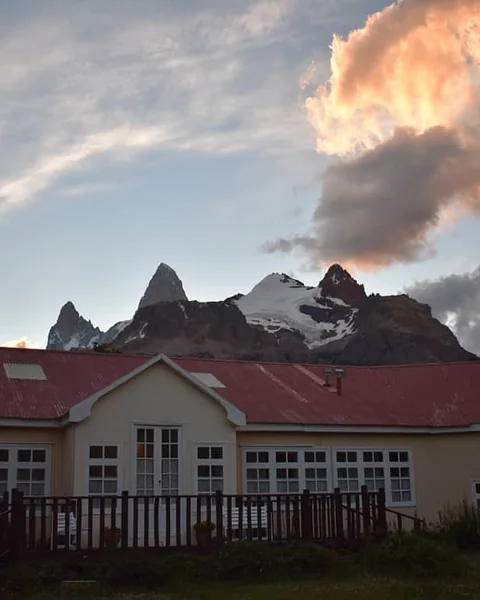
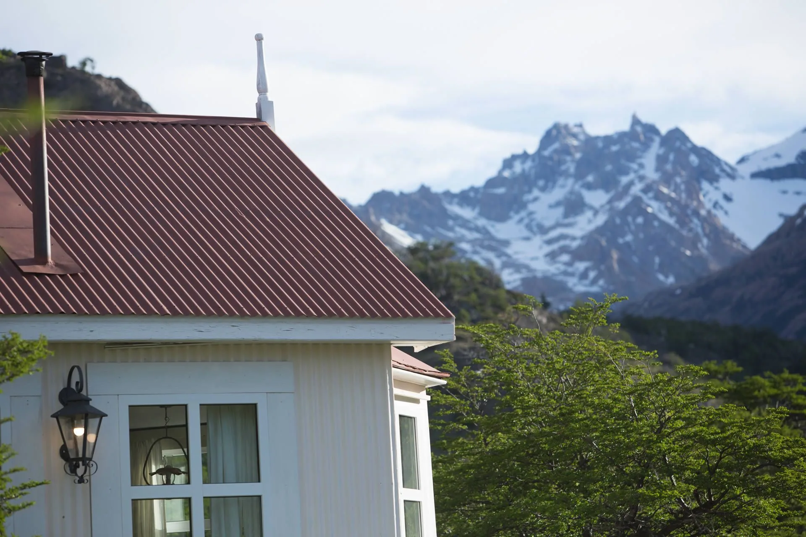
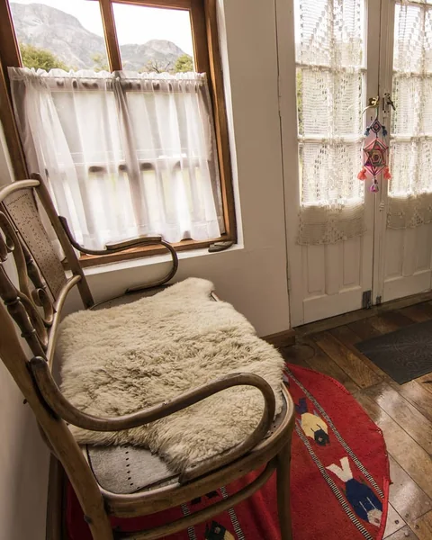
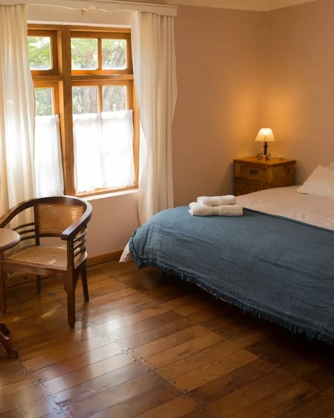
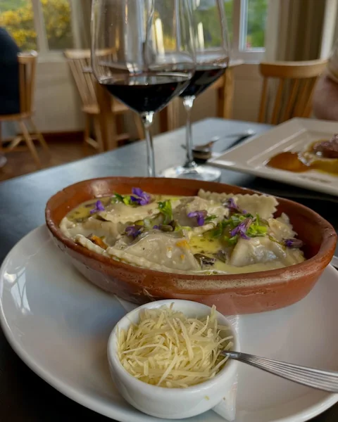
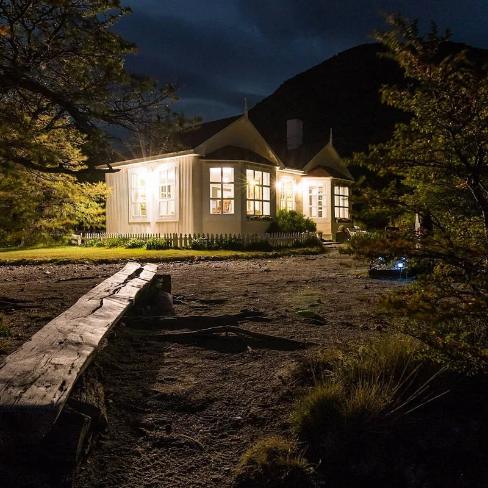
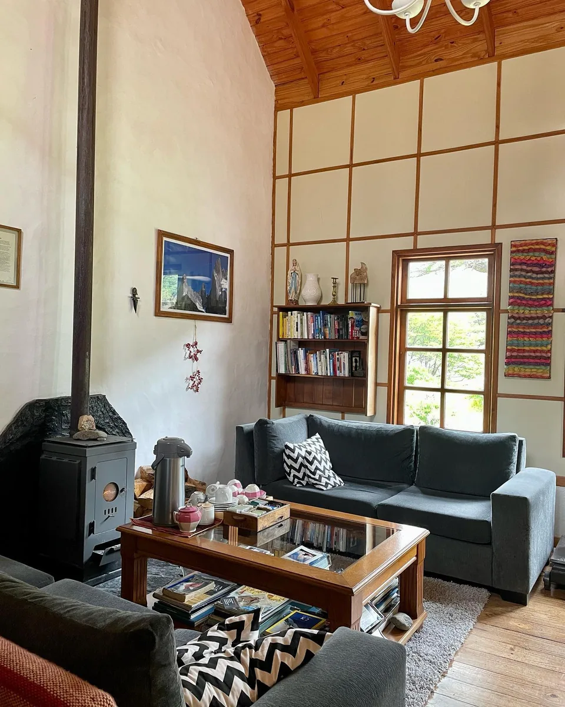
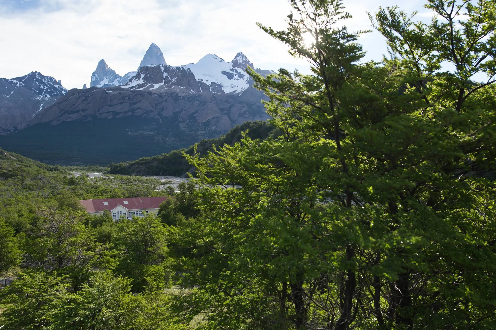
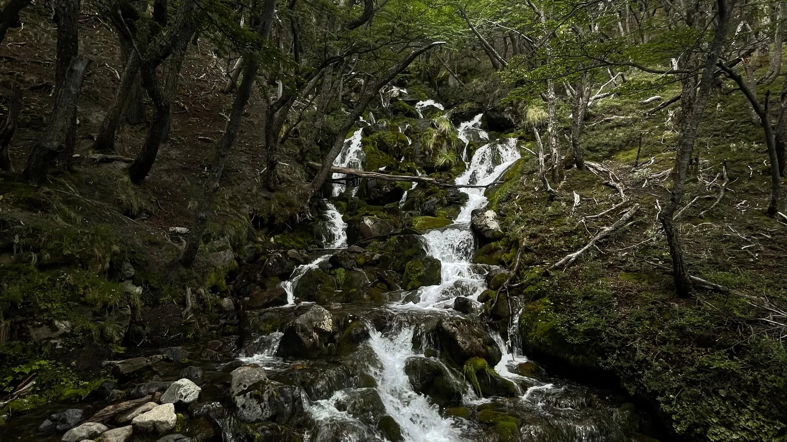
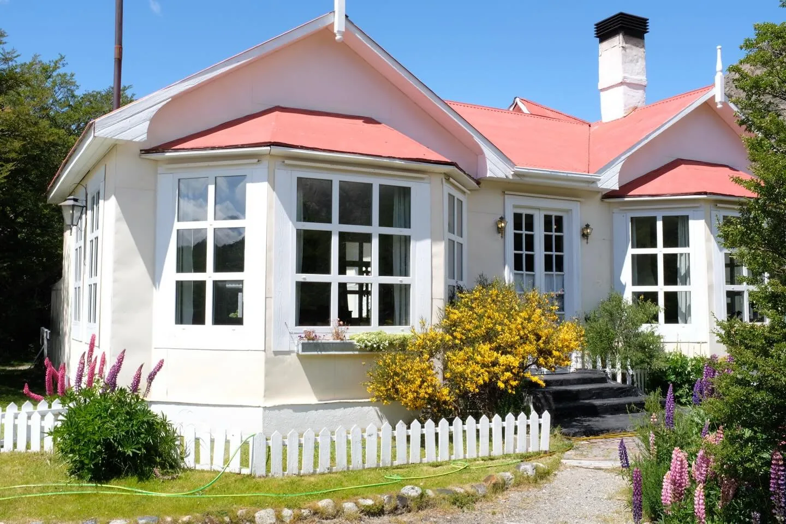

In front of Mount Fitz Roy
Owned & run by mountain lovers




Mountain hostería · El Chaltén, Patagonia
Owned & run by mountain lovers

Owned & run by mountain lovers

Our strength is to connect with nature

A relaxed atmosphere to enjoy

Good quality food

This place amazed me since my first visit to the area, in the summer of 1987, when I felt that I had found “my place”. After that trip there were others. There were other mountains and other friends. Until I finally decided with my mate on some adventures to follow the path of those first dreams and settle down in El Chaltén.
The Patagonia received me, it gave me its time, its storms and on the slopes of the Fitz Roy it gave me El Pilar, where I was able to combine my greatest passions: mountains and countryside.
I chose its name as a tribute to what I consider was the purest climbing of these mountains. In 1979 Renato Casarotto climbed alone the northern slope of the Fitz Roy tracing one of the most beautiful and most difficult routes known today as Pilar Casarotto or Pilar Norte.
Since it was built, in 1994, El Pilar receives visitors from all around the world who are tempted by the possibility of living the Patagonia in a different way. For everyone, our doors are open. We all are readily willing to guide our guests during their stay so that everyone may live, in their own way, the energy of Nature.
We hope you may all feel the magic of this place as we do.
Carolina Codo
Pioneer in De las Vueltas River valley and surrounded by a thick forest of native trees we offer a Patagonian country house recreation, similar to the first ones in the area.
A warm and cozy atmosphere, with creaking wood that may be heard burning in the great main chimney.
The bar, the dining room and the library are open to guests, who will feel at home. A deck on the east wing of the house, sheltered from the wind, is the ideal corner for a sunny afternoon.
Our country home has only 10 rooms, very comfortable, with private bathroom and warmly set.
It is important to know that in the hostel and surroundings we do not have Wi-Fi, TV or cell phone signal. Far from being an inconvenience, it represents an opportunity to connect with other activities and specially with nature.


Leaving the country house you follow a path bordering the Río Blanco. It is a solitary path which allows you to have a better perception of the different sounds of nature. The path ends at the edge of the moraine with a fabulous view of the lagoon and the icebergs on one side and, on the other side, the forest, El Chaltén and the Viedma lake at the back. This is the closest view of the Fitz Roy granite wall and its peripheral needles.

Leaving the country house on the path that borders Blanco river, after 45 minutes you will find a great view of the Piedras Blancas glacier, one of the lowest of the area. If you wish to approach the glacier and its lagoon you should continue on the same path until the Camping Site Poincenot and from there cross the Río Blanco to access the area of the glacier.

Leaving El Pilar by car or bus, travelling north, always bordering the De las Vueltas river. After an hour you arrive at the south point of Del Desierto lake where the walk starts. The path enters the forest. Huemul glacier is a glacier which lies in Huemul lagoon, a lagoon of milky blue waters typical of the glacier area.
The beginning of the trip is on foot following a path to the west. Progressively the arid slopes lead to the typical Patagonian forest of the area where the Nothofagus (Lengas, Ñires and Coihues) are predominant. During the trip you will have magnificent views of the Andes Mountains, of the different granite peaks which characterize the area and of Marconi Pass, doorway to the Continental Ice Fields.
Andreas Madsen, who was a countryside worker of Danish origin, arrived in Buenos Aires in 1901. He became a member of the Limits Commission with Chile and cooperated with the Perito Moreno. He built his first cottage, made of wood and furs, alongside Viedma lake. At present, it is possible to visit the cottage where he lived by crossing De las Vueltas river by cable carriage.
All activities offered by local operators.
Hostería El Pilar is located in De las Vueltas river valley, 17 km away from El Chaltén (Province of Santa Cruz), where Eléctrico river flows into De las Vueltas river. It is a privileged place since it is far from the most frequently visited attractions of the area and a starting point for many paths. It possesses a very special magic since it is surrounded by the Andean-Patagonian forest.

The nearest airport is located in the city of El Calafate (237 km from El Chaltén). The approximate flying time from Buenos Aires is 3 hours; from Bariloche, 1:30 hours and from Ushuaia, 1:10 hours.
Once you arrive at El Calafate there are regular buses to El Chaltén which have at least two services a day. The approximate travel time is 3 hours.
You may also get there by car, leaving from El Calafate, taking provincial Route 11, and then taking the legendary Route 40, travelling north. After 107 km you arrive at the bridge crossing the Río La Leona (we recommend you to stop for a view of the antique place). A little more to the north, once you have bordered the east side of Viedma Lake, turn west taking provincial Route 23 which takes you to El Chaltén.
Once you arrive at El Chaltén, leaving the town by taking San Martín avenue, you must follow a gravel road which ends at Del Desierto Lake bordering the De las Vueltas river. The path enters the mountain and you may quickly appreciate the transition of the landscape into vegetation and forest. The entrance to the property of El Pilar country house is on kilometer 17.
Pictures of the country house
Ruta Provincial 41, km 17, (9301) El Chaltén,
Province of Santa Cruz
Contact us directly for promotions and availability at info@hosteriaelpilar.com.ar